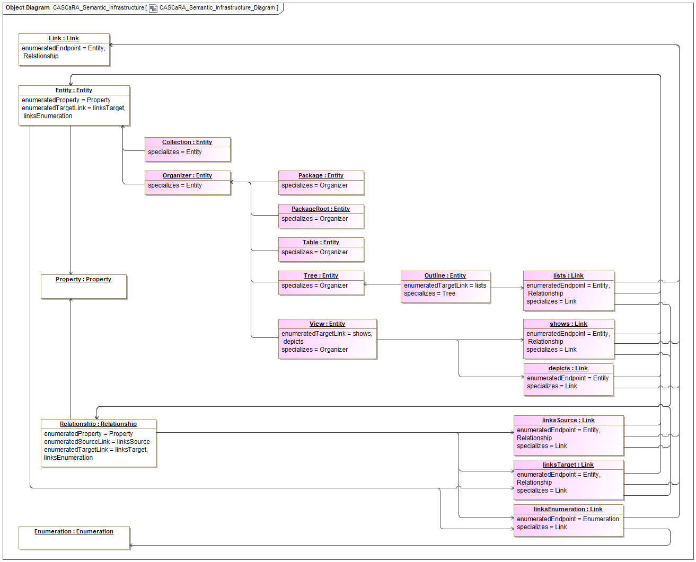
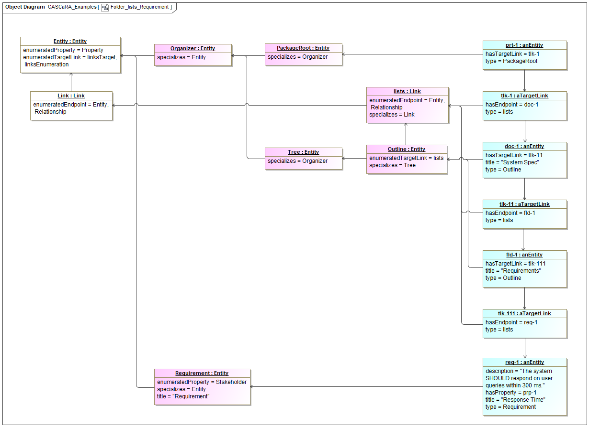
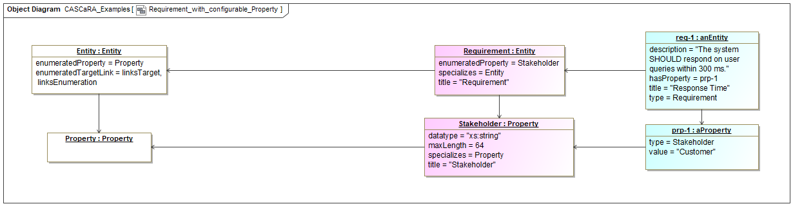
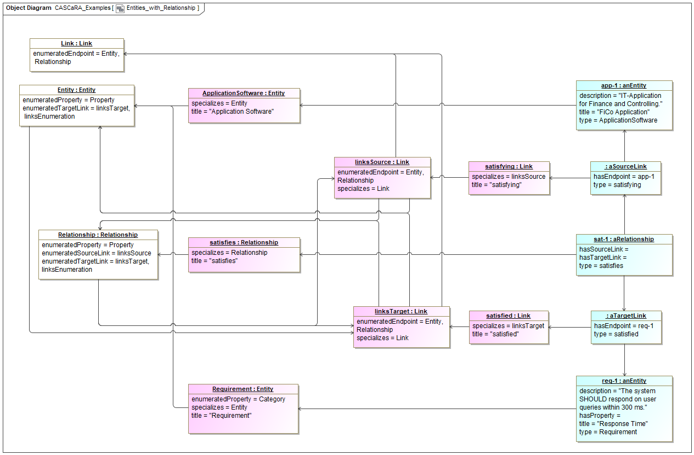

CASCaRA Semantic Infrastructure
The CASCaRA Semantic Infrastructure complements the CASCaRA Metamodel by further sub-typing its items in the application domain. The idea is to keep the metamodel as simple as possible and add semantic precision through the semantic infrastructure.
Let's consider the paradigm of separating syntax and semantics with the objective to shield the software from an ontology under evolution over time. In all likelihood, the CASCaRA Semantic Infrastructure will be used by software for reasons of simplicity. Therefore it is advised to treat the semantic infrastructure similarly to the metamodel: Change it seldomly and keep it downward compatible. Thus, software built assuming an older version shall not break when a new version of the metamodel or semantic infrastructure is adopted. So the semantic infrastructure can be seen as an intermediary layer between metamodel and ontology.
Thus, an ontology for use with the CASCaRA Metamodel SHOULD sub-type the items of the CASCaRA Semantic Infrastructure.
CASCaRA Semantic Infrastructure Diagram
The CASCaRA Semantic Infrastructure complements the CASCaRA Metamodel by further sub-typing its items in the application domain. The idea is to keep the metamodel as simple as possible and add semantic precision through the semantic infrastructure.
Let's consider the paradigm of separating syntax and semantics with the objective to shield the software from an ontology under evolution over time. In all likelihood, the CASCaRA Semantic Infrastructure will be used by software for reasons of simplicity. Therefore it is advised to treat the semantic infrastructure similarly to the metamodel: Change it seldomly and keep it downward compatible. Thus, software built assuming an older version shall not break when a new version of the metamodel or semantic infrastructure is adopted. So the semantic infrastructure can be seen as an intermediary layer between metamodel and ontology.
Thus, an ontology for use with the CASCaRA Metamodel SHOULD sub-type the items of the CASCaRA Semantic Infrastructure.

Properties
| Element Type |
Diagram |
| Notation |
UML Object Diagram |
Statements
CASCaRA Examples
A simple, yet representative CASCaRA example is presented. This chapter describes it, whereas the data is listed in the four native CASCaRA formats ('Magic Tetrahedron'):
Properties
Statements
Folder lists Requirement
This example shows a requirement being listed in a document called 'System Spec' with a folder named 'Requirements' together with their types:
- At the upper right the actual package-root is seen. By convention, it serves as an anchor for all organizers of the package so that they can be found easily. That's needed as a graph as such has no beginning and no end.
- It holds one or more document outlines of a package using a target link of type 'lists'.
- The document is represented by an entity of type 'Outline', which is a subtype of 'Entity'.
- It holds one or more folder subtrees again using a target link of type 'lists'.
- The folder is again represented by an entity of type 'Outline'.
- It holds one or more requirements again using a target link of type 'lists'.
- The requirement finally is represented by an entity of type 'Requirement', which is also a subtype of 'Entity'.
- The target link instances have no id, as they are composed in the parent object, i.e. prt-1, doc-1 and fld-1 respectively. If changed, the parent object as a whole gets a new revision.
- To summarize: A Link is a direct graph edge between entities and relationships, which are graph vertices.
Details:
- All items shown on the diagram are metamodel instances of the metamodel classes, so-called UML InstanceSpecifications.
- The white items at the left border incarnate the metamodel items and are abstract, i.e. not intended for instantiation. In RDF/OWL they are the top owl:Class, so that the itemType of any specialization can be determined by SPARQL query.
- All light purple items are CASCaRA (application) types defined more firmly by the semantic infrastructure or derived by an ontology. They are usually available online and there is no need to include them in a CASCaRA package. However, they can be included. These items are objects (instances), thus data, in the implementation domain expressed in UML.
- The light blue items to the right are instances in the application domain or 'payload' of a CASCaRA package. These items are also objects/instances in the implementation domain, thus data like their types.
- All identifiable items of a package, both types and instances, are composed in its graph structure.
- See the textual notation of all CASCaRA formats in the GitHub Repository 'CASCaDE Verification and Validation'.

Properties
| Element Type |
Diagram |
| Notation |
UML Object Diagram |
Statements
Requirement with configurable Property
This example shows an entity of type 'Requirement' with one of potentially multiple configured properties:
- At the upper right the requirement instance is seen.
- Like all entity and relationship instances, it has the native properties 'title' and/or 'description'. They are called 'native', because they are defined by the metamodel and don't need to be configured.
- The requirement includes a configured property of type 'Stakeholder' with the value of 'Customer'.
- The requirement's type 'Requirement' must enumerate all configured properties with datatype and optionally domain restrictions, in this case a stakeholder as xs:string with maxLength=64.
- The property type 'Stakeholder' is said to be configurable, because it can be defined (enumerated) by zero to many entity or relationship types.
- The property instance has no id, as it is composed in the parent object, i.e. req-1. If changed, the parent object as a whole gets a new revision.
Details:
- All items shown on the diagram are metamodel instances of the metamodel classes, so-called UML InstanceSpecifications.
- The white items at the left border incarnate the metamodel items and are abstract, i.e. not intended for instantiation. In RDF/OWL they are the top owl:Class, so that the itemType of any specialization can be determined by SPARQL query.
- All light purple items are CASCaRA (application) types defined more firmly by the semantic infrastructure or derived by an ontology. They are usually available online and there is no need to include them in a CASCaRA package. However, they can be included. These items are objects (instances), thus data, in the implementation domain expressed in UML.
- The light blue items to the right are instances in the application domain or 'payload' of a CASCaRA package. These items are also objects/instances in the implementation domain, thus data like their types.
- All identifiable items of a package, both types and instances, are composed in its graph structure.
- See the textual notation of all CASCaRA formats in the GitHub Repository 'CASCaDE Verification and Validation'.

Properties
| Element Type |
Diagram |
| Notation |
UML Object Diagram |
Statements
Entities with Relationship
The example shows an entity 'FiCo Application' with type 'Application Software' which satisfies another entity 'Response Time' with type 'Requirement':
- 'FiCo' stands for 'Finance & Controlling'.
- The relationship instance of type 'satisfies' (in the middle of the items shown next to the right border) is reified and has two links to the related entity instances. In general, also relationships can be linked by relationships on either side, so that 'statements on statements' can be made.
- The links have a named type for the source and the target side respectively.
- Any of the links can have multiple endpoints, if the relationship is true for all of them. Usually a single satisfying entity (here 'FiCo Application') points to several satisfied entities (one of which is 'Response Time', here).
- The source and target link instances have no id, as they are composed in the parent object, i.e. sat-1. If changed, the parent object as a whole gets a new revision.
Details:
- All items shown on the diagram are metamodel instances of the metamodel classes, so-called UML InstanceSpecifications.
- The white items at the left border incarnate the metamodel items and are abstract, i.e. not intended for instantiation. In RDF/OWL they are the top owl:Class, so that the itemType of any specialization can be determined by SPARQL query.
- All light purple items are CASCaRA (application) types defined more firmly by the semantic infrastructure or derived by an ontology. They are usually available online and there is no need to include them in a CASCaRA package. However, they can be included. These items are objects (instances), thus data, in the implementation domain expressed in UML.
- The light blue items to the right are instances in the application domain or 'payload' of a CASCaRA package. These items are also objects/instances in the implementation domain, thus data like their types.
- All identifiable items of a package, both types and instances, are composed in its graph structure.
- See the textual notation of all CASCaRA formats in the GitHub Repository 'CASCaDE Verification and Validation'.

Properties
| Element Type |
Diagram |
| Notation |
UML Object Diagram |
Statements